01 / PRESENCENOTORISM DESIGN OFFICEVOL. 001 · 2026
A / 01
FORM
MATTER
INTENT
45° → ∞
FORM
MATTER
INTENT
45° → ∞
DESIGN
WITH
INTENT.
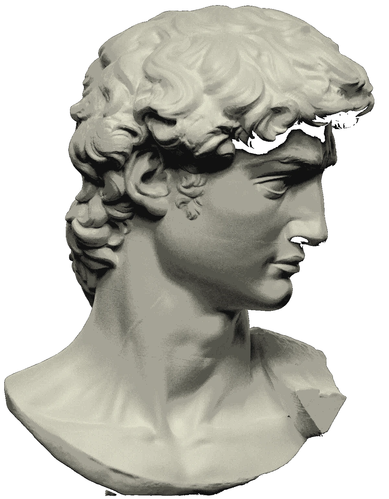
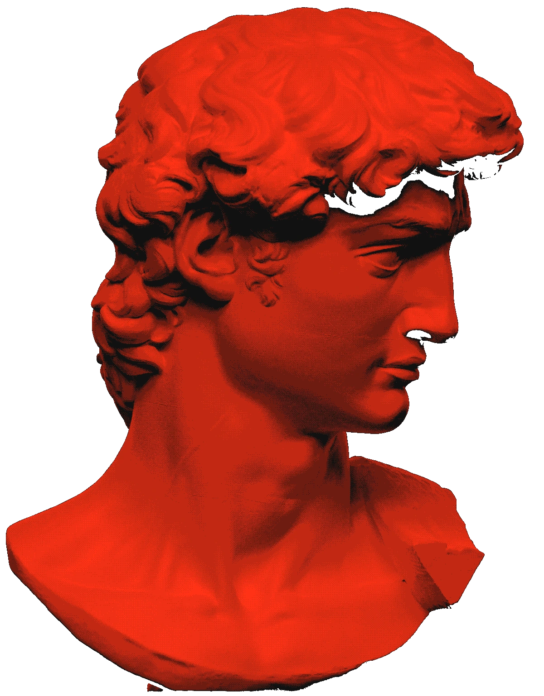
A visual library for your AI agent.
110 languages. A point of view.
LOCAL LIBRARY
OPEN SOURCE / APACHE 2.0
OPEN SOURCE / APACHE 2.0
02 / LANGUAGETHE NOTORISM REFERENCE COLLECTIONED. 1.0.0
THERE IS A LANGUAGE FOR THE WORK.
110
110
WAYS
TO SEE.
Three original studies for every style.
Look closely. Choose deliberately.
330
VISUAL STUDIES06
FAMILIES01
LOCAL LIBRARY
VISUAL STUDIES06
FAMILIES01
LOCAL LIBRARY
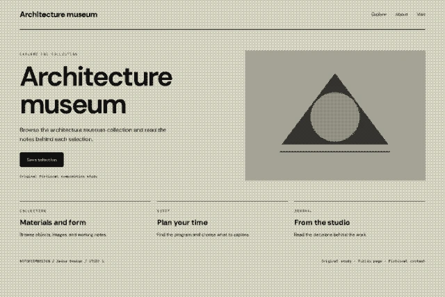
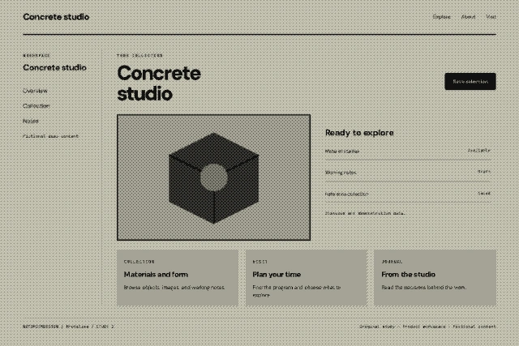
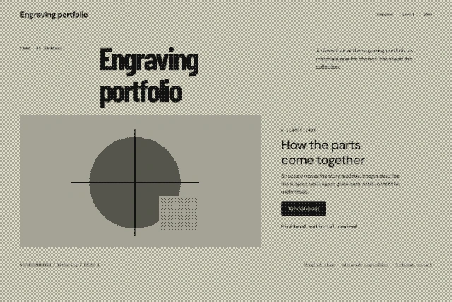
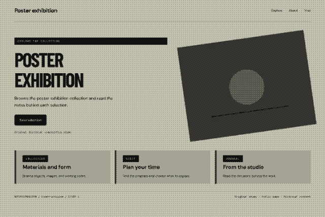
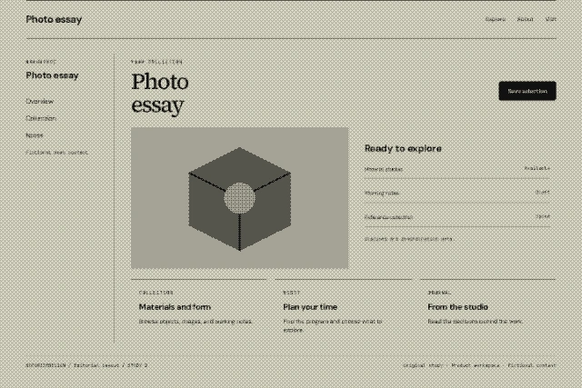
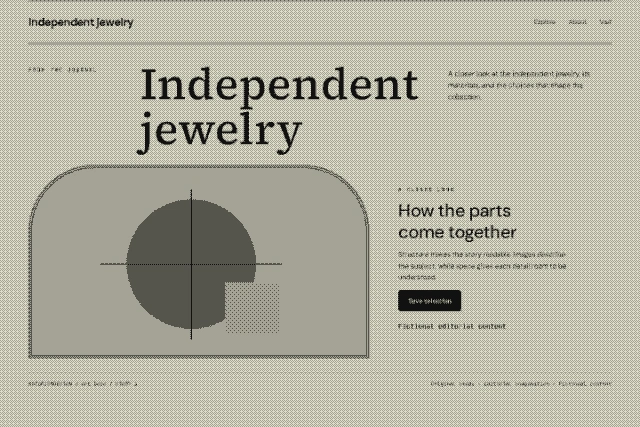
FORM / TYPE / MATERIAL / COMPOSITION / MOTIONORIGINAL TEACHING STUDIES, RECOLORED FOR THIS EDITION.
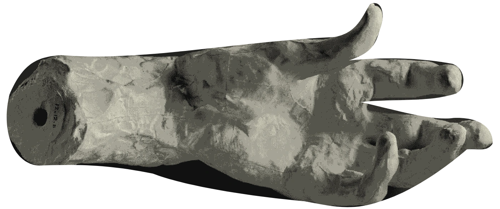
A VOCABULARY TO WORK WITH.
ART MOVEMENTS / INTERFACES / RETRO / LAYOUT / TEXTURE / INTERACTION02—05
03 / SYSTEMALGORITHMIC PRINT STUDIESSEED
ORDER.
THEN POSSIBILITY.
One palette.
A thousand arrangements.
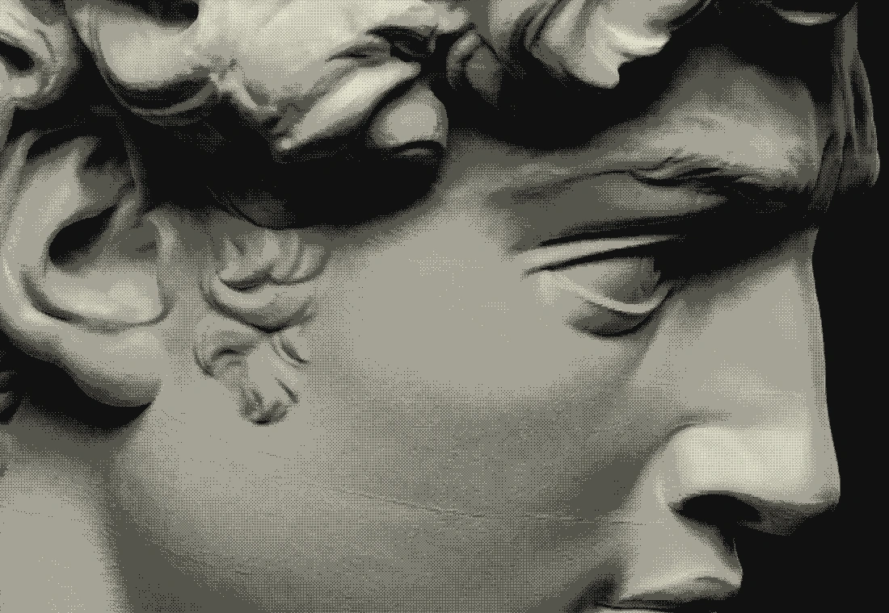
GRID 06 × 02 / THREE INKS / NATIVE SCROLL
RULES CREATE THE SPACE. YOU CHOOSE THE FORM.03—05
04 / FORMFROM OBSERVATION TO ARTIFACTMAKE THE WORK VISIBLE.
OBSERVE.PLAN.MAKE.REVIEW.
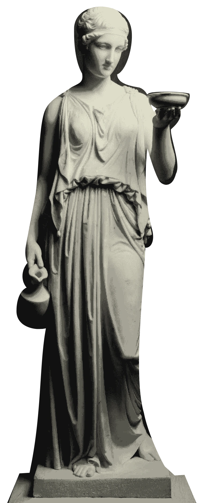
01 BRIEF
02 REFERENCES
03 ARTBOARDS
04 EVIDENCE
THE ARTIFACT
HOLDS THE WORK.
02 REFERENCES
03 ARTBOARDS
04 EVIDENCE
THE ARTIFACT
HOLDS THE WORK.
Your decisions stay with the design.
A BRIEF. REAL REFERENCES.WORKING ARTBOARDS. A REVIEW.
NOTORISM / A PROCESS YOU CAN INSPECT04—05
05 / RELEASEDESIGN WITH INTENT.APACHE 2.0
YOUR NEXT
POINT OF
VIEW.
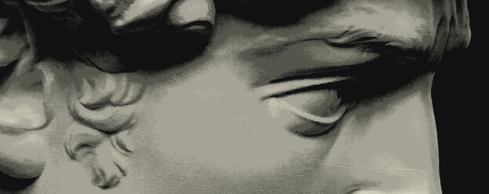
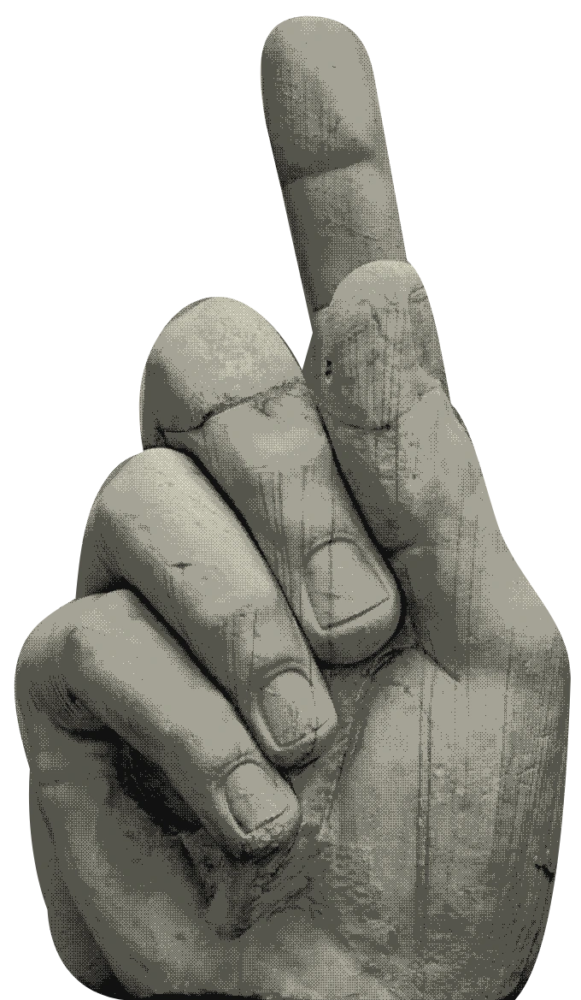
Bring Notorism into your workspace.
Explore the source NODE 22+ / CODEX + CLAUDE CODELOCAL LIBRARY / OPEN SOURCE